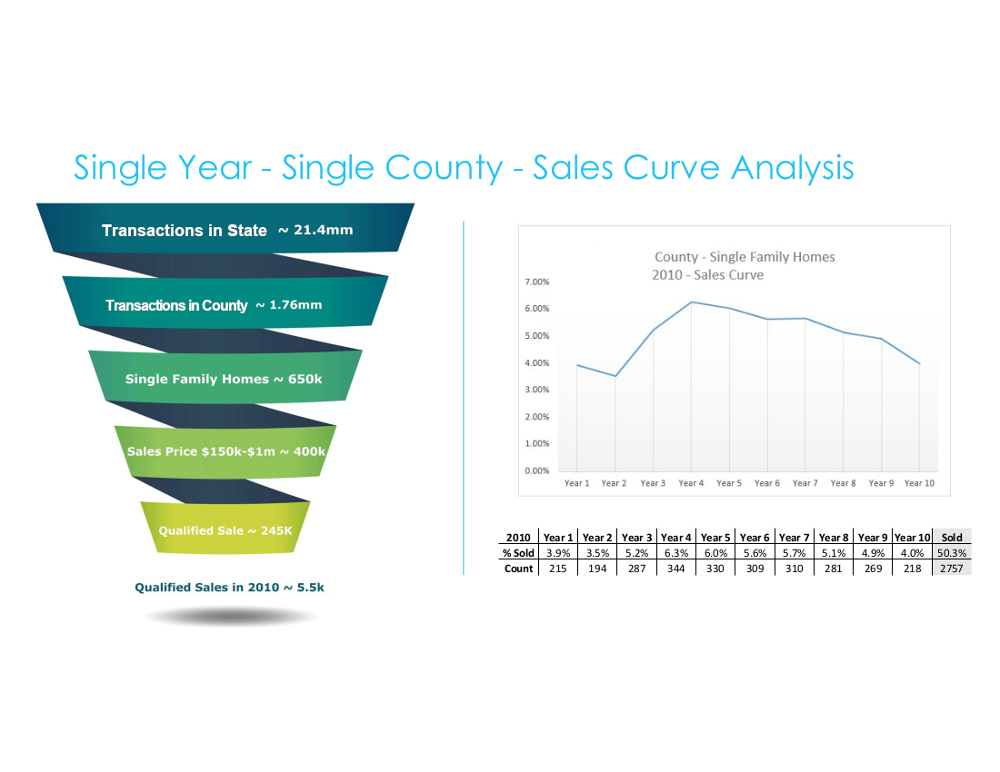
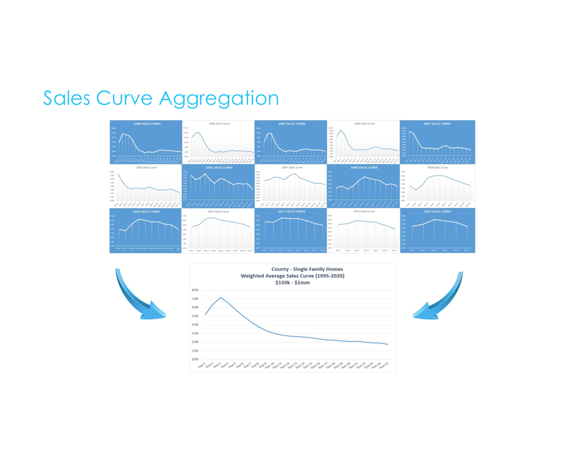
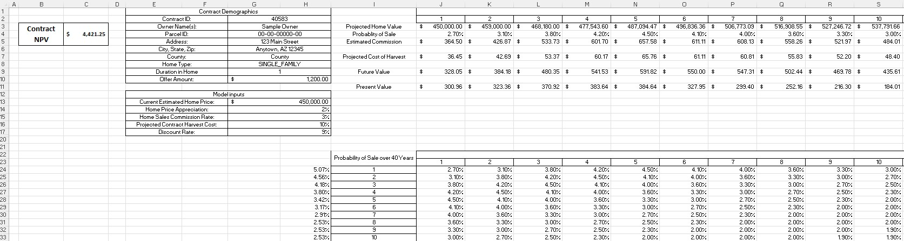
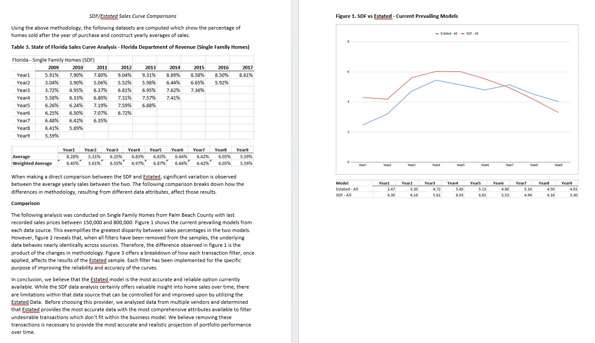

Residential PropTech · Platform & Data Systems · Lead Case Study
Co-developing localized property sales probability curves from tens of millions of raw transactions — and building the data infrastructure that made institutional capital formation possible.
The Business Context
A residential PropTech startup was launched on a digital marketing lead driven business model. This model initially worked with a small local team, however when the company began scaling, the numbers stopped working.
The company made a strategic pivot and introduced a future right-to-list option. The product found immediate market traction and the problem shifted from product discovery to financing. In order for the business to operate, the upfront costs of originating these agreements required capital. Since the return on investment for each customer was potentially years in the future, the business aimed to properly value the assets to attract outside investment.
The Problem
There was no established methodology for valuing a portfolio of future right-to-list agreements. The value of each contract depended entirely on the probability that a given homeowner would sell during the agreement term, and based on market knowledge we knew that varied by geography, market conditions, ownership duration and many other factors.
To secure a credit facility, we needed to construct a defensible, auditable net present value for each contract in the portfolio. To that end, we undertook building localized sales probability curves from the ground up based on historical transaction data.
My Role
Collaborating with the CTO, I took a hands-on role in designing the analytical methodology for our sales probability models. This was a truly iterative partnership: I personally audited raw transaction data to help build the inclusion, exclusion, and qualification logic from the ground up. By mapping how the system treated every transaction, I ensured the methodology was grounded in data reality, while the CTO engineered the scalable scripts to bring our joint vision to life.
From there, my role expanded significantly. I became the primary point of contact with our external auditing firm. I also took on the responsibility of explaining and defending the methodology to institutional lenders and investors. As the business scaled nationally, I oversaw the construction of new curves across new jurisdictions. When the company closed a new $40M Tier-1 private credit facility, I became directly responsible for all borrowing base reporting, excess concentration analysis, and tranche construction.
Building the Curves
The foundation of the probability curves was historical transaction data. We initially began by obtaining every qualifying residential transaction we could obtain through public and private data sources. In Florida alone, our qualified transaction dataset included approximately 30 million records after exclusion criteria were applied. Nationally we processed 25 to 30 years of transaction history across 33 states.
The primary issue that we faced is that property and transaction data is very messy. Our goal was to show average probability of sales, but we found that within any dataset, even the "standardized" data from private vendors, there were problems and regional inconsistencies. Certain transactions needed to be accounted for and excluded because these events record as property transactions but represent nothing about how long a typical homeowner lives in a house before selling. Including them would have artificially inflated the sales probabilities.
We developed a rigorous qualification framework to isolate genuine arms-length sales between individual buyers and sellers. The exclusion logic covered:
Every exclusion rule represented a deliberate judgment call about what constituted a genuine sale. The methodology was iterative — early curve versions were tested, interrogated, and refined until the output accurately reflected observed selling behavior.
The resulting curves expressed the probability of sale as a function of homeownership tenure. For example, homeowners in a given county might show a 2% probability of selling in year one, 3% in year two, 5% in year three, building across a 40-year term. In some jurisdictions, transaction data was not available going back far enough to reliably construct a full 40-year curve. In those cases, we defaulted to an aggregated national curve to fill the gaps. The impact on overall valuation was negligible given the small probabilities involved, but it was a known limitation we documented and disclosed.
Data Qualification Funnel & Single County Sales Curve

From 21.4 million raw Florida transactions to 245,000 qualified sales — the filtering methodology that produced reliable county-level probability curves. Right: the resulting Palm Beach County 2010 sales curve with underlying data table.
Sales Curve Aggregation — Palm Beach County 1995–2020

Fifteen individual year-by-year curves from 2000–2014 aggregated into a single weighted average model for Palm Beach County. The 2008–2009 curves show the housing crisis effect on selling behavior — visible evidence that the model captured real market dynamics.
Applying the Model
The curves were applied dynamically at the individual contract level based on their county, property type, and the ownership tenure. Each contract entered the curve at the point corresponding to the homeowner's existing tenure. That means if you already owned your home for 7 years, you enter the curve at year seven. The probability from the skipped years was then redistributed proportionally across the remaining term to preserve the cumulative assumption. The output was a single NPV figure for each contract, incorporating expected commission based on conservative annual home value appreciation assumptions and discounted for the time value of money.
This individualized valuation served as the foundational component for all financing activities, including the borrowing base calculations, concentration limits, and capital draws.
Individual Contract Valuation Model (Sanitized)

The contract-level NPV model — illustrating how county sales probability curves were applied dynamically based on homeowner tenure, with present value calculated across a 10-year window. Model inputs include home price appreciation, commission rate, harvest cost, and discount rate assumptions.
The Tier-1 Private Credit Facility
The $40M credit facility with a Tier-1 private credit firm introduced a level of rigor and reporting complexity beyond the earlier, less formal facility. I built out the complete data analysis infrastructure in SQL to service this process — constructing borrowing base reports, excess concentration calculations based on IRR thresholds and geographic distribution limits, and detailed tranche-level reporting delivered to the firm under the credit agreement.
I coordinated extensively with the underwriting department to ensure data accuracy and compliance. They performed client-level due diligence and assembled the details required for each contribution, while I owned the portfolio-level eligibility logic and reporting.
External Validation
Our methodology was independently audited by an independent third-party methodology auditing firm — a specialized firm whose formal opinions were used to support institutional lender due diligence. I served as the primary point of contact with their team, walking their analysts through our qualification logic, curve construction process, and underlying assumptions. Passing independent audit was not a formality — it was a requirement that made institutional capital available.
I also presented the portfolio methodology directly to prospective lending partners on multiple occasions, explaining the model mechanics, the NPV construction process, and the data governance framework to audiences who needed to trust these numbers enough to commit capital.
Data Methodology Comparison — Florida DOR vs. Estated

Formal methodology comparison prepared to document the transition from Florida Department of Revenue SDF data to Estated's national dataset. The analysis demonstrates that when all filters are removed, both datasets behave nearly identically — confirming that methodology improvements, not underlying data differences, account for the variance between models.
The Outcome
The curves and the infrastructure built around them became the financial foundation of the business — enabling a $40M credit facility across more than 30 tranches, supporting the evaluation and reporting of over 35,000 assets, and providing the analytical basis for every capital decision the company made during its growth phase.
Beyond the numbers, this work shaped how I think about data quality, methodology design, and the relationship between analytical rigor and business outcomes. When capital decisions depend on your data being right, the stakes of a flawed assumption or a poorly defined exclusion rule become concrete. Through this experience, I learned how to handle the pressure of very high-stakes data integrity where there is little room for mistakes. This standard of reliability has informed everything I've built since.
Let's Talk
I'm currently exploring Senior Product Manager opportunities in platform, data systems, and operational automation — remote, nationwide.
Connect on LinkedIn →